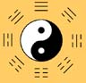

Andrew Arthur Prescott
B.Ac.(UK), Dipl.Ac.(NCCAOM), L.Ac.(NC)
Classical Acupuncture
& Shen Tao Acupressure
Andrew Prescott has been practicing Acupuncture since 1977. He initially qualified as a Registered Psychiatric Nurse in 1975 at Glenside and Barrow Hospital, England. He worked at the Bristol Childrens Hospital, Bristol, England. He then completed his initial training in Acupuncture (Lic. Ac.) at the College of Traditional Chinese Acupuncture (CTA, UK), Leamington Spa, England in 1977. He holds an advanced degree in Acupuncture (B. Ac.) from the College of Traditional Acupuncture, representing additional clinical training.
Prior to moving to the USA Andrew Prescott obtained his Diplomat from the National Commission for Certification of Acupuncture and Oriental Medicine (Dipl.Ac., NCCAOM) It should be noted that these examinations are primarily based upon the modern TCM approach. He obtained a North Carolina acupuncture license in 1995.
In addition to clinical private practice since 1977, he has been a guest lecturer of Shen Tao Acupressure at the College of Traditional Chinese Acupuncture, Leamington Spa, England, and he co-founded, and taught at, Middle Piccadilly Natural Healing Center, Sherborne, Dorset, England. He served as Clinical Director at Jung Tao School of Classical Chinese Medicine, Sugar Grove, NC for seven years.
He is currently in private practice in Durham, NC. Conducts advanced training seminars, researches Chinese Texts and has published Cloud Gate a Comprehensive Compendium of Acupuncture Point Names.
Find new patient forms under Further Information.
To contact Andrew Prescott:
Email, or Telephone: (919) 225-5032